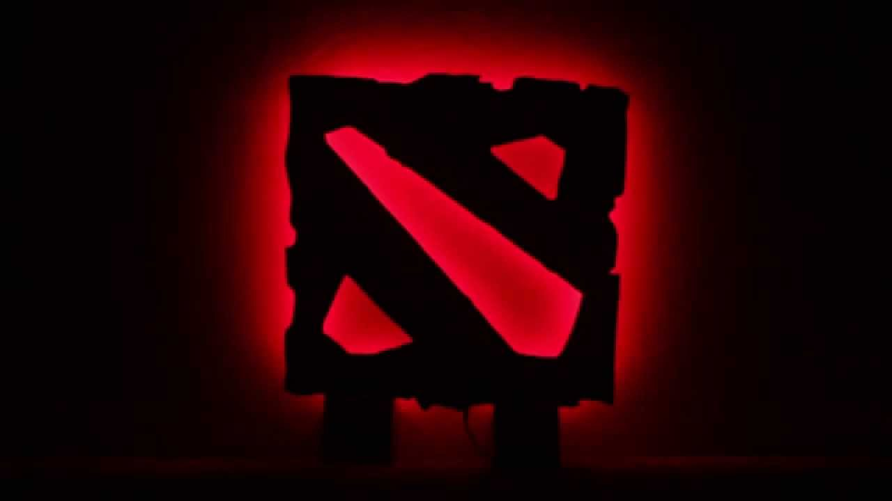
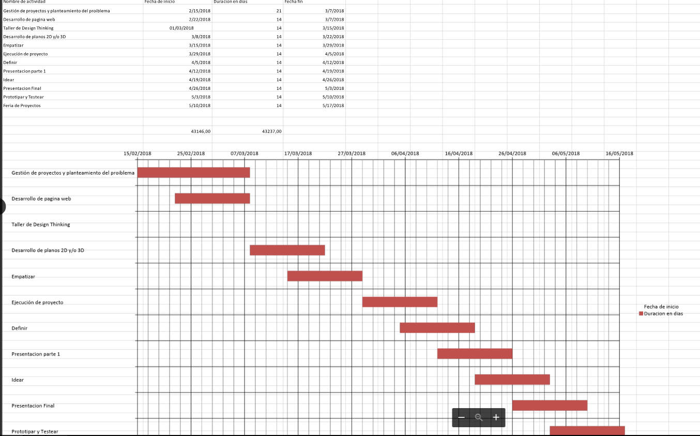

Project Management and Problem Statement
The project is aimed at the gamers of the game of dota 2, throughout the history of this video game in our country has been shown that gamers invest a lot of their time and money to meet their opportunities to improve and belong to big leagues They are played all over the world, including IT, the international where the best teams from all over the world play.



SOCIAL IMPACT
-This series of lamps are inspired by classic style desk lamps and with a modern touch. However, we have chosen to make more new designs, offering larger and brighter optical illusion lamps that aim to alter the perception of space and shape by using 3D shapes as the basis of their 2D designs.
-Our project has the opportunity to cover several types of lamps with designs of DOTA 2, we can make a product dedicated to the tastes of the client. We take advantage of the importance that technology has taken on entertainment, which is more dedicated to a young audience.
-Currently the market dedicated to the young public has grown as fashion continues to change; as an example we currently live in an era where technology is getting everywhere, as in entertainment.
-Video games are an opportunity that we have noticed to take advantage, many young people have a pastime to video games (DOTA 2) and most find something that captures their attention as a favorite character or even a console brand which could be their taste too.
-That is why they feel the need to have something that keeps them connected with their favorite pastime during homework or when they are simply dedicating their time to another activity without this present or using their console, then the best way to satisfy that need is to acquire some souvenir or object dedicated to those you need; in our case we can offer designs where the young public can choose according to their tastes.
IS THE PROPOSAL OF HIGH ECONOMIC AND SOCIAL IMPACT?
Well, our project will generate profits thanks to the attractiveness of DOTA 2 designs and the use of media that disseminate our product, be it the use of web pages or any other type of advertising. The alliances can also contribute to the greater sale of our product; We can also take advantage of the shortage of our product in the city of Arequipa and its high demand.
The products are designed to attract consumers of all ages and their goal is to exercise the brain in a healthy way. Developers of video games to train the brain and memory affirm that practicing every day for a few minutes is possible to raise the intellectual level, improve memory and reduce stress. In the social impact we can help solve the problem or you need the public to provide a product taking into account the buyer's specification.
Gantt diagram
In this part we will disclose the agreed dates in group to advance with the project in the course of the time granted, also cover these issues:
-This popularity of this game and the amount of players around the world has generated much movement of money both within the game as well as externally independent for each person who creates their own assets to sell. In our case, surveys were conducted about what products the gamers buy in this game.
-What you want to achieve with the Arduino and the NRF24L01 is that 2 gamers friends have their desks or lamps in their homes, and when one of the two starts playing dota 2 he will light his lamps or his desk, which will send a signal and automatically send a signal to the lamp or desk of your friend indicating that you are in game and you want to play with him.
-Create artifacts that players with the theme of the game DOTA2 and that these can acquire, and that in turn are of great ultimacy for them.